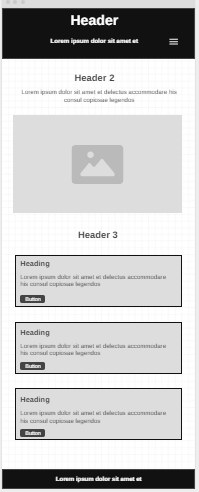
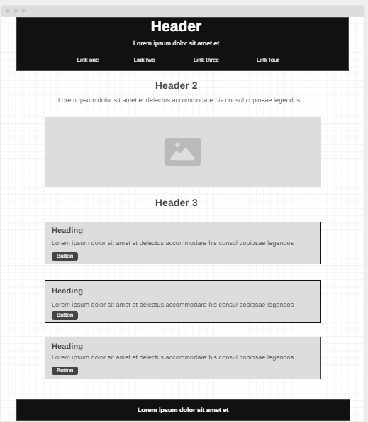

Overview
Site Name
Calisthenics Training Blog
This site name highlights the core focus on calisthenics training as well as documenting my journey with it and appeals to enthusiasts seeking skill development in this area.
Purpose
The purpose of this website is to serve as a comprehensive guide and blog for calisthenics enthusiasts. The site will document training routines, skill progressions, and insights into the tech and fitness world, supporting both beginners and advanced athletes on their journey.
Target Audience
Scenarios
Potential User Scenarios:
- How do I progress from basic to advanced calisthenics skills like the handstand or planche?
- What kind of technology can help track my progress effectively?
Style Guide
Color Palette
| Primary | Secondary | Accent 1 | Accent 2 |
|---|---|---|---|
| [#333333] | [#f8f9fa] | [#196fb3] | [#e09416] |
Primary color is used for headings and branding elements, while secondary color is for backgrounds and sections. Accent colors highlight buttons and links.
Typography
Headings: Croissant One
Body Text: Montserrat
Croissant One is chosen for headings to give a unique, elegant feel, and Montserrat is used for the body to enhance readability.
Wireframes
Home Page Wireframe
Mobile View:
 Mobile Wireframe LinkDesktop View:
 Desktop Wireframe Link